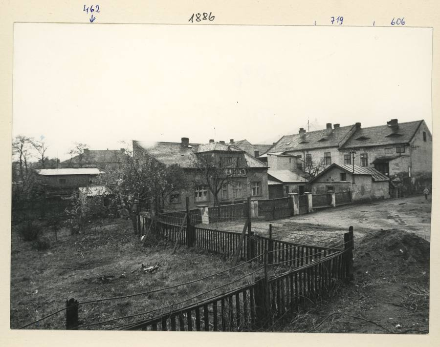
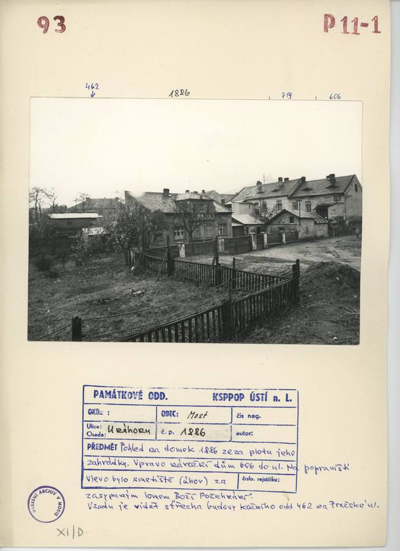
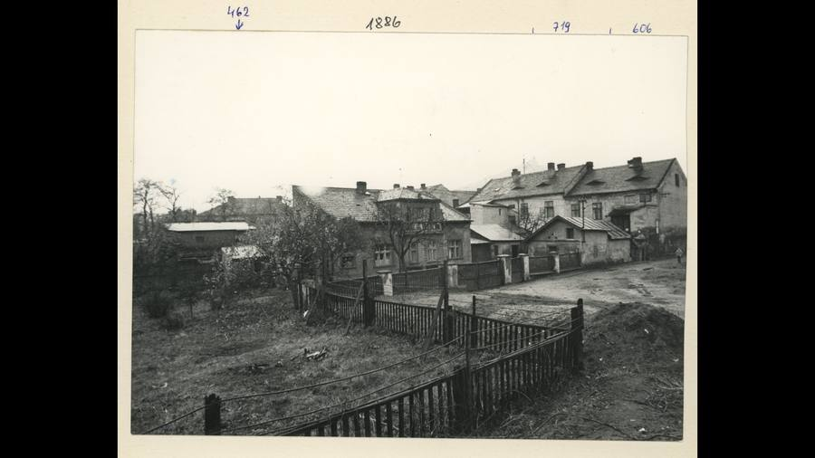
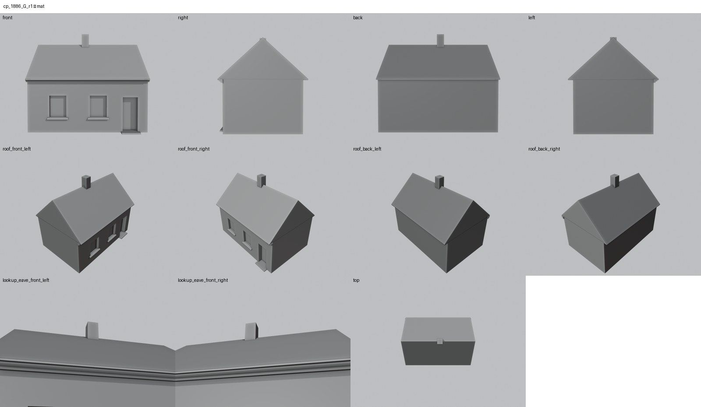
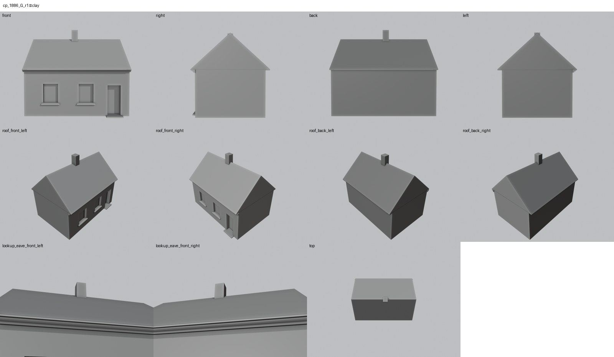
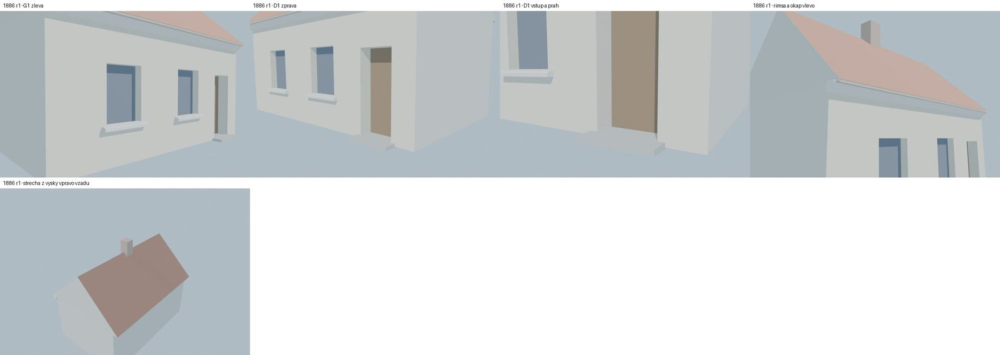

Identita domu
Upozornění – Hypotéza: Domek bez GIS půdorysu: poloha a velikost z náčrtu, podoba odhad podle jediného zarostlého snímku.
přízemní domek se zahrádkou v hloubce bloku JV od nárožního 606 (konec U náhonu), podél hranice parcel 606/719; v GIS chybí
Poznámka k identitě a GIS: v GIS chybí; poloha a rozměry ≈ 4,6 × 7,1 m z náčrtu (měřítko podle GIS půdorysu 606)
Použité prameny: náčrt 606/5 („1886 příz. domek“), fotografie cp_1886_001 od zahrady (fasáda zakryta stromy a plotem), karta.
Přílohy v databázi (3)
Všechny přílohy struktury 1886 v databázi Libuše, načtené živě 9. 11. 2026 jen pro čtení a otevřené. Kliknutím otevřete větší náhled.


fotografie
SHA-256 4bccba940e98…


archivní karta
SHA-256 527058038022…


odvozenina bez tagu (kolorovaná / výřez / FRONT)
SHA-256 a087201aad42…
Geometrie
| Revize geometrie | r1 |
|---|---|
| Úsek ulice | NP · Na popravišti, jihovýchodní řada (od nároží 606 k plácku u Pražské) |
| Poloha | GIS budova None, bez čísla popisného |
| Šířka průčelí | 7,13 m |
| Výška okapu | 3,20 m (odhad) |
| Podlaží | 1 |
| Střecha podle pramenů | viz plán modelu |
| Otvory / vikýře v modelu | 3 / 0 |
| Polygonů | 99 |
Kontrolní pohledy






Kontrola modelu
| Brána geometrie (automaticky) | v pořádku |
|---|---|
| Uzavřené podkroví (GLB) | v pořádku: zásahy paprsků 0, nekryté zdivo 0,00 m², střecha nad prázdnem 0,00 m² |
| UV mapování | v pořádku: 0 zkolabovaných ploch z 99 |
| Síť | v pořádku |
| Počty otvorů proti pramenu | souhlasí zčásti (passed_partial) |
| Vizuální kontrola | prošla (Claude (Opus 5.5), 2026-11-09) |
| Kontrola střechy | prošla |
- G1, G2, D1: bez rámečku – fasáda zakryta (přiznaná hypotéza)
Textury
bez textur (Hypotéza – jen prosté materiály)
Až Codex dodá texturovaný model, objeví se v prohlížeči nahoře volba Textury (Codex).
Hypotézy
Upozornění – Hypotéza: Domek bez GIS půdorysu: poloha a velikost z náčrtu, podoba odhad podle jediného zarostlého snímku.
Vše níže je model_hypothesis, provisional, locked: false.
- celý model je hypotéza: poloha a rozměry z náčrtu ±15 %, strana s okny zvolena (zahradní strana neověřena)
- výška 1 podlaží (okap 3,2 m) a sedlová střecha podle snímku, sklon odhad
- příčná valbová část s mansardovým podkrovím, zádveří, prádelna a kůlny z náčrtu nemodelovány
Historie revizí modelu
- r1 3.11.2026 (Claude): first build: hypothesis cottage after sketch 606/5
Soubory
- Geometrie čp. 1886, GLB (revize r1)
- Pracovní model: F:\MOST\output\u_nahonu_street_claude_2026-10-23\houses\cp1886\r1\cp_1886_G_r1.blend
- Plán modelu: F:\MOST\output\u_nahonu_street_claude_2026-10-23\houses\cp1886\geometry_plan.json